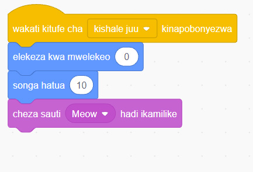
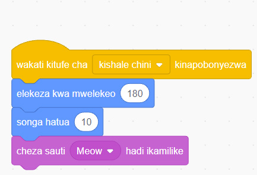

11. Katika programu ya pili, ndani ya bloku ya ‘wakati kitufe cha kinapobonyezwa’ badilisha kishale kwenda ‘kishale chini’. Kisha ndani ya bloku ya ‘elekeza kwa mwelekeo’ badilisha nyuzi kwenda nyuzi 180. Programu itabadilika kama inavyoonekana katika Kielelezo namba 51.

Picha A. Maelezo ya programu fikivu ya Quorum: Wakati kitufe cha kishale juu kinapobonyezwa, mhusika hugeuka nyuzi 0, husonga hatua 10, kisha hutoa sauti ya Meow.
Picha B. Maelezo ya programu fikivu ya Quorum: Wakati kitufe cha kishale chini kinapobonyezwa, mhusika hugeuka nyuzi 180, husonga hatua 10, kisha hutoa sauti ya Meow.Kielelezo namba 51: programu iliyotolewa nakala na kubadilishwa.
12. Toa nakala nyingine (kama ulivyofanya katika hatua namba 9). Iweke programu hiyo upande wa kulia. Kisha badilisha kishale kwenda ‘kishale kulia’ na mwelekeo uwe nyuzi ‘90’.
13. Toa nakala nyingine tena (kama ulivyofanya katika hatua namba 11). Iweke programu hiyo upande wa kushoto. Kisha badilisha kishale kwenda ‘kishale kulia’ na mwelekeo uwe nyuzi ‘270’. Hizo nyuzi zitabadilika zenyewe na kuwa ‘-90’.